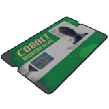
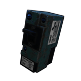
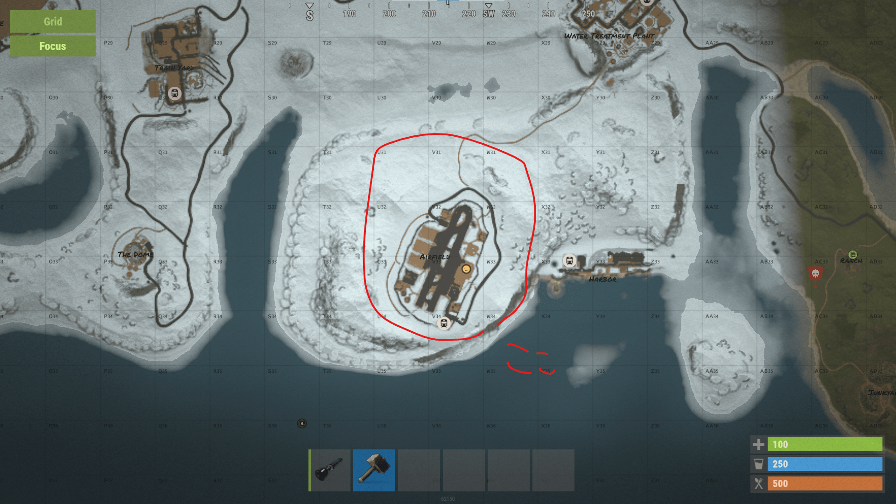

※このページはps4版の方でも同様にお楽しみいただけます。

ロケラン入手までの流れは大まかに説明すると、グリーンカードキー、フューズ入手→港のモニュメントパズル→空港のモニュメントパズル→ロケット発射場のモニュメントパズル です。
また、ロケランの筒自体の入手はカードキーを使わなくても武器ボックスからドロップすることがあります。
カード類を集めよう
まずロケットおよびロケットの弾を入手するには緑青赤のすべての色のカードキーとフューズが4つほど必要になります。なのでそちらをまずは入手しましょう。
・緑のキーカードの入手方法
緑のカードは地上の科学者AIがたまに所持している又は、マーケット、灯台、ガソリンスタント、ジャンクヤードとかで見つかります。10回までしか使用できないので注意
・青のキーカードの入手方法

緑のキーカードとフューズを入手したら港へ向かいましょう。マップの海の近くにあります。港は二種類あるので両方のやり方を説明します。

港の中には二階建てのプレハブがあります。その中にフューズを差し込む部分があるので差し込みましょう。
差し込んだら同じ建物の二階に電力が供給されるので緑のカードキーを使って中に入りましょう。カードは光っている部分に近づいて左クリック、ps4ならR2です。

・ではここからもう一つの港のモニュメントパズルを説明します。
まず同様に港の中央あたりに一階建てのプレハブがあるので探しましょう。そして、その中に同様にフューズを差し込む部分があるので差し込みましょう。


差し込んだらプレハブの表にスイッチがあるのでオンにしましょう。すると近くのプレハブに電源が供給されるのでカードをかざして中に入りましょう。


※青のカードキーはプレハブの中の机の上にあります。他のプレイヤーも同様に狙っているため、なかったら取られたということです。数十分で再度沸きます。
・レッドカードキーの入手方法
レッドカードキーの入手方法はたくさんありますが、今回は空港のモニュメントパズルを紹介します。(一番簡単なので)
まず空港の位置ですが、下の画像の場所です。日本語設定ならエアフィールドと書いてあるのですぐわかります。
まず二階建ての管制塔のような建物の一階の角の部屋にフューズをはめ込みしたのタイマーをオンにしてください。


一分間だけ地下のランプが光るので急いで地下に移動してください。